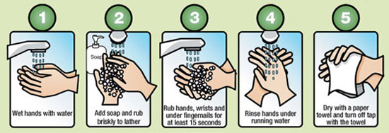
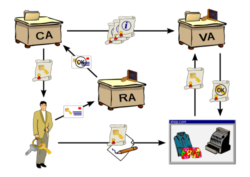
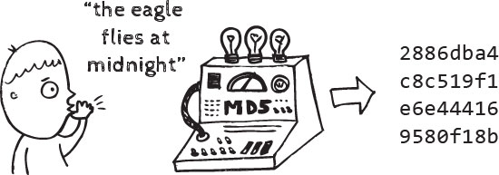

SSL/TLS

What is SSL/TLS?
- Tool for making the internet more secure
- Internet is insecure by default
- TLS + HTTP = HTTPS
Clarifications
- SSL vs. TLS
- Not just the web
Cryptographic Protcol
Cryptography
- Practice and study of techniques for secure communication in the presence of third parties

What is secure communication?
- Confidentiality (Keeping secrets)
- Authenticity (Verifying identities)
- Integrity (Ensuring safe transport)
Protocol
A system of rules that explain the correct conduct and procedures to be followed in a situation
 simcoemuskokahealth.org
TLS Protocol
- Handshake
- Data Exchange
- Shutdown
How does the TLS protocol provide cryptographic security?
TLS Protocol
- Handshake
- Data Exchange
- Shutdown
Problem 1: Confidentiality
citizenmag.comSolution 1: Symmetric Encryption
Private Key Cryptography

Subsitution Cipher

Problem 2: Confidentiality
How do the client and the server get the same keys?
Solution 2: Asymmetric Encryption
Public Key Cryptography

Problem 3: Confidentiality / Authenticity
Where are the public keys?
How do I know I have the correct public key?
Solution 3: Public Key Infrastructure (PKI)

wikimedia.orgProblem 4: Confidentiality
But asymmetric encryption is slow and expensive.
Solution 4: Handshake
- Handshake
- Data Exchange
- Shutdown

Problem 5: Integrity
Tampering
labelswest.comSolution 5: Hashing Function (Hash)
- Converts input into a fixed length
- Another message doesn't have the same hash
- Fingerprint
- Infeasible to find original message
- Keyed Hash Message Authentication Code (HMAC)

blog.varonis.comProblem 6: Integrity
Dropping or Replay
Solution 6: Sequence Code

Problem 7: Integrity
Truncation (dropping the last message)
Solution 7: Shutdown
- Handshake
- Data Exchange
- Shutdown
TLS Protcol
- Handshake:
- Asymmetric Encryption (Confidentiality)
- Public Key Infrastructure (Confidentiality / Authentication)
- Data Exchange:
- Symmetric Encryption (Confidentiality)
- Hashing (Integrity)
- Sequence codes (Integrity)
- Shutdown (Integrity)
What can I do?
For internet users
- Look for the lock in your browser
- Don't click through when certificates are invalid
- HTTPS Everywhere

SSL Client Test
ssllabs.com
For developers or sysadmins
- Enable TLS
- Configure it correctly
- Deployment Best Practices
SSL Server Test
ssllabs.com
@rmeritz
http://rebecca.meritz.com/ggm15
https://meritz.rocks